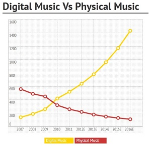

The data types presented on this website will show how the integration of music digitally has begun to change from digital to streaming. Click on one of the tabs to the left to see the differences over the years. From 2012 to 2014 music usage has changed as technology has evolved. Enjoy the data statistic chart put together thanks to the help of Google Developers charts.